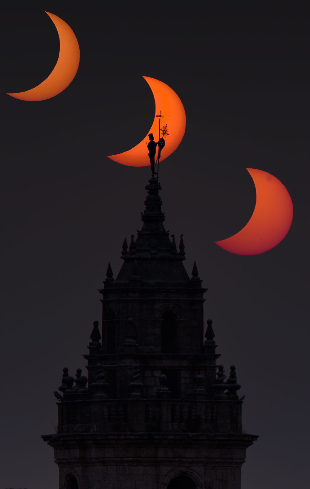
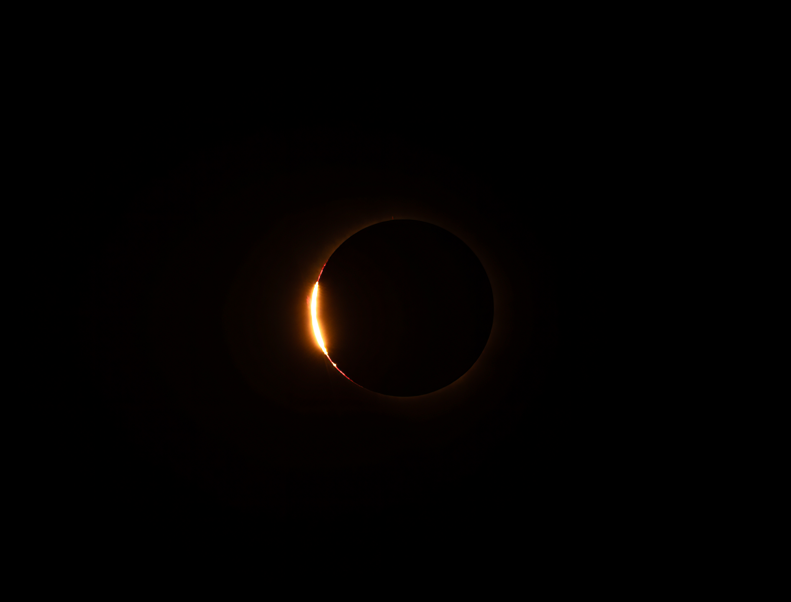
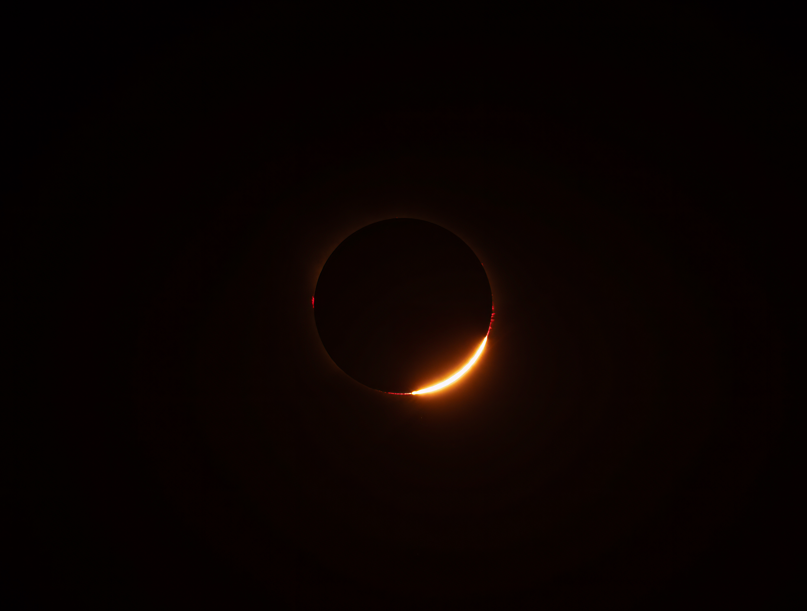
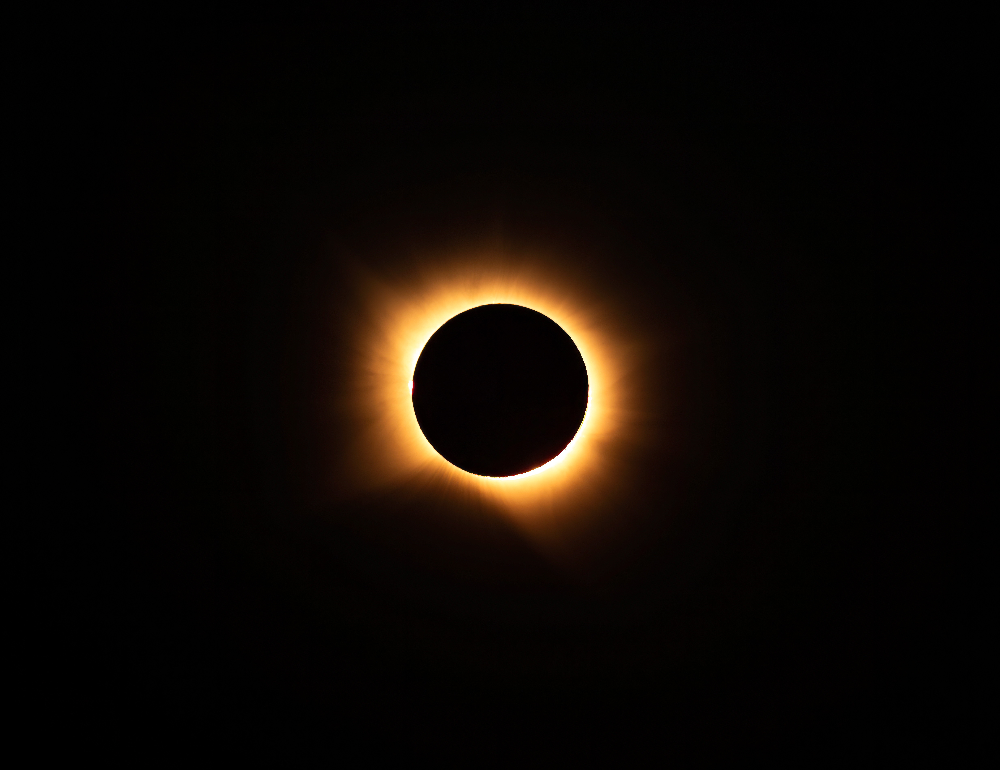

01 · La idea
Un fenómeno que había que anticipar
Hay fotografías que dependen de un instante irrepetible. Para conseguirlas, el trabajo comienza mucho antes de que ese momento llegue.
En Escamilla quise fotografiar el eclipse solar de una forma diferente: no mostrar únicamente el Sol eclipsado, sino registrar su evolución e integrarla en el paisaje, utilizando la iglesia y su torre como referencias de la composición.
El objetivo era reunir en una sola imagen distintas fases del fenómeno y conservar la relación entre el cielo y el lugar desde el que lo observaba.
02 · Planificación
Preparar el encuadre antes de la sesión
La posición del Sol respecto a la iglesia y el horizonte requería estudiar el lugar con antelación. Utilicé PhotoPills para planificar el encuadre y anticipar la posición del fenómeno durante la sesión.
También realicé pruebas previas para comprobar la posición prevista del Sol y preparar el sistema de fotografía solar. La planificación era esencial: durante el eclipse no habría tiempo para improvisar el encuadre.

La arquitectura no era un simple fondo. Formaba parte de la imagen que quería construir y ayudaba a situar el eclipse en un lugar concreto.
03 · Los instantes decisivos
Las perlas de Baily
En los momentos próximos a la totalidad, la luz solar puede atravesar los valles del borde lunar y aparecer en forma de pequeños puntos luminosos. Este fenómeno se conoce como perlas de Baily.
Son instantes muy breves y exigen prestar atención tanto a la evolución del eclipse como a los parámetros de exposición. Por eso forman parte de las imágenes que ayudan a comprender la complejidad de la sesión.

Perlas de Baily I
Un instante fugaz en el borde de la Luna.

Perlas de Baily II
Otro momento de una fase que dura apenas unos instantes.
04 · La totalidad
El momento central del eclipse
La totalidad es una fase distinta a las anteriores y requiere adaptar la exposición a las condiciones de luz del momento. En esta parte de la sesión, cada segundo cuenta y la preparación previa permite concentrarse en la captura.

Esta imagen permite detenerse en el fenómeno y observarlo de manera independiente, más allá de la secuencia completa que aparece en la panorámica.
05 · Captura y montaje
De cientos de fotografías a una sola composición
La imagen final se construyó a partir de una sesión de aproximadamente 325 fotografías. De ese conjunto seleccioné 64 fotogramas clave, tomados a intervalos de unos dos minutos y medio, para representar la evolución del eclipse.
Las tomas se realizaron con una Pentax K-1 Mark II y el teleobjetivo Pentax DA* 150-450 mm, trabajando a 450 mm para registrar el Sol. Para la referencia de la iglesia utilicé una focal de 200 mm.
Las diferentes fases exigieron adaptar los parámetros de captura a las condiciones de luz. Posteriormente, la selección y el montaje permitieron integrar las distintas posiciones del Sol en una composición única.
El reto no consistía solo en reunir las fotografías, sino en mantener una lectura coherente del paisaje y mostrar con claridad la evolución del fenómeno.
06 · Ficha técnica
Equipo y herramientas
Cámara: Pentax K-1 Mark II.
Objetivo principal: Pentax DA* 150-450 mm, utilizado a 450 mm para la secuencia solar.
Referencia arquitectónica: toma de la iglesia a 200 mm.
Planificación: PhotoPills.
Preparación: filtro solar adecuado y soporte preparado para la sesión.
Proceso: captura secuencial, selección de fotogramas y montaje de la panorámica.
07 · El resultado
El eclipse y el paisaje, en una misma imagen
Este proyecto reúne dos aspectos que me interesan especialmente en la astrofotografía: la planificación precisa de un fenómeno astronómico y la búsqueda de una composición que lo conecte con un lugar concreto.
La panorámica de Escamilla es el resultado visible de todo ese trabajo previo, de la atención durante el eclipse y de la selección posterior de las fotografías.
Más que una imagen aislada del Sol, quería conservar el recuerdo de cómo se desarrolló el fenómeno sobre este paisaje y cómo la arquitectura ayudó a darle contexto.